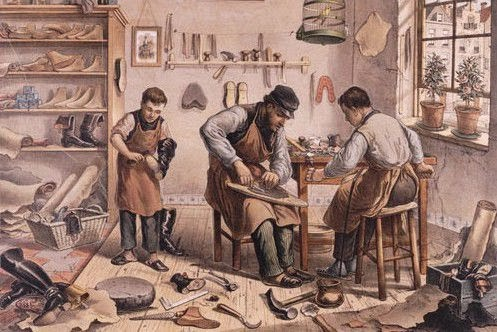
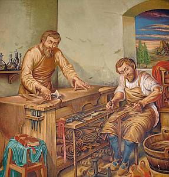

Sobre o artesão e a excelência no trabalho
Do Artesão à Era Digital: Excelência no Mercado de Trabalho Atual.
Autores: Bernardo Biazeto, Gabriel Ribeiro, Murilo Bissoloti, Pedro Henrique e Victor Santos
Para se destacar no atual mercado de trabalho extremamente competitivo, é preciso que o trabalhador se assemelhe a um artesão da Idade Moderna, pois, tal qual essa profissão de épocas passadas, o profissional atual necessita dedicar horas de estudos e de prática ao seu ofício para que esteja apto a realizar seu trabalho com excelência. Dessa forma, este conseguirá se sobressair sobre os demais concorrentes da sua área de atuação.
Além disso, assim como o artesão necessitava de ótimas ferramentas para que ele conseguisse efetuar bem seu trabalho, a mesma situação ocorre no mercado de trabalho do presente, onde os trabalhadores dependem de suas ferramentas que, nesse caso, são os diversos instrumentos tecnológicos, como as inteligências artificiais, por exemplo. Porém, além de ferramentas tecnológicas, o conhecimento, acima de tudo, é a principal “arma” de qualquer indivíduo que quer se destacar no mundo atualmente. Ainda assim, contraditoriamente, este é o “armamento” que apresenta maior escassez hoje em dia.
Portanto, aquele que trabalha na atualidade, necessita conectar todas as suas habilidades e conhecimentos de forma harmoniosa e inteligente. E, então, como um artesão, utilizar todas essas conexões para construir trabalhos completos em todos os quesitos, em vez de terminá-los em meras seções, sem conexão nenhuma entre os saberes.
De fato, aquele que souber realizar isso com maestria, irá, com toda a certeza, se sobressair sobre os demais concorrentes de sua profissão. Entretanto, isto, obviamente, não é fácil de se conseguir, pois necessita que o profissional esteja sempre estudando para aprimorar sua técnica. No entanto, o resultado desse esforço não tem valor estimado.
Então, se você quiser buscar lugares cada vez mais altos na sua carreira profissional, espelhe-se na figura do artesão e, assim como este, busque sempre o progresso intelectual e o refino de suas competências e potencialidades para que, desse modo, consiga atingir a excelência no seu trabalho.